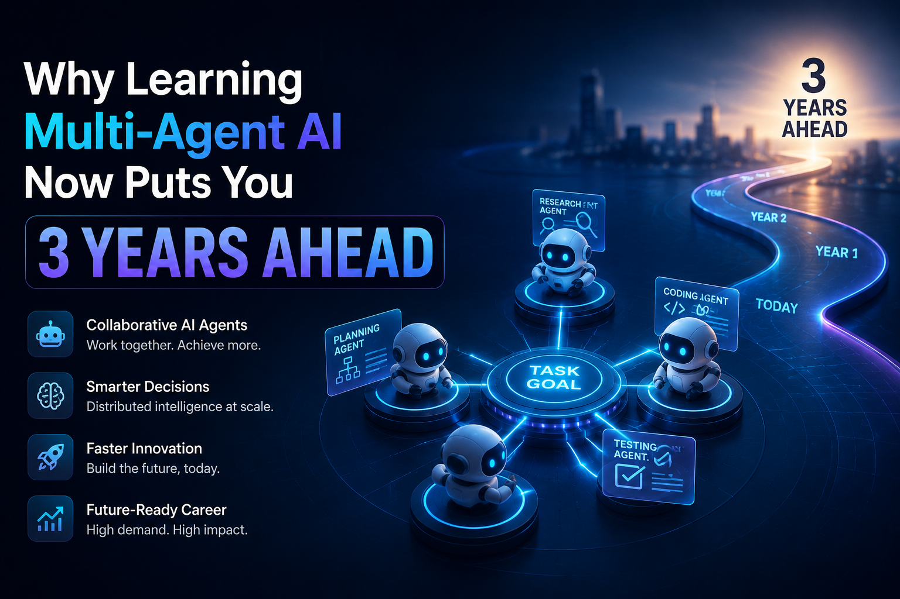

Most people learning AI right now are learning the wrong layer.
They're getting good at prompting. At writing better instructions for ChatGPT. At fine-tuning outputs. And that's useful but it's the 2022 version of the skill. The field has already moved. And the gap between where most people are and where the industry is going is widening fast.
The next layer is multi-agent AI. And the people who understand it now will be sitting in a very different position in three years.

It's not one AI doing everything
Here's the simplest way to think about it. A single AI model is like a brilliant freelancer you give them a task, they do their best, they hand it back. Multi-agent AI is like a coordinated team. You have a planner agent that breaks down the goal. A researcher agent that gathers information. A writer agent that drafts. A critic agent that reviews. A coordinator that keeps them all aligned.
Each agent is specialized. Each one does what it's best at. Together they handle tasks that a single model no matter how capable struggles to do reliably on its own: long, complex, multi-step work that requires memory, decision-making, and self-correction along the way.
Tools making this buildable right now without being an AI researcher:
The infrastructure exists. What's missing is the people who understand how to think in systems rather than prompts.
Why learning this now puts you years ahead
Every major technology shift has a window a period where the skill is real and in-demand but the people who have it are still rare. Web development had it in the late 90s. Mobile had it around 2010. Cloud had it a few years after that.
Multi-agent AI is in that window right now.
The companies building serious AI workflows have already moved past single-model tools. They're orchestrating agent pipelines systems where multiple models collaborate, hand off tasks, check each other's work, and adapt when something breaks. The demand for people who can design, build, and debug those systems is growing faster than the supply of people who understand them.
Job postings requiring knowledge of agent frameworks like LangGraph and AutoGen are appearing across engineering, product, and operations roles. The skill premium for people who understand orchestration not just prompting is already visible. The gap between "I know how to use AI tools" and "I know how to build systems where AI agents work together" is enormous right now. That gap is an opportunity. In two or three years, it won't be.
The mistake people are making
The most common thing I see is people treating multi-agent AI as a complexity upgrade like it's just prompting but harder. It isn't.
The shift is architectural. You stop thinking about "what do I tell the AI to do" and start thinking about "how do I design a system where multiple AIs collaborate reliably." That means thinking about agent roles, task decomposition, failure modes, memory and state, and how information flows between agents.
It's closer to systems design than it is to prompt engineering. And that's exactly why it's valuable it draws on a different and deeper kind of thinking that most people haven't developed yet.
The good news: you don't need a PhD to get there. The frameworks are accessible. The concepts are learnable. What it requires is a willingness to think in systems instead of instructions and to get your hands dirty building something that actually runs.
Where to actually start
If you're convinced and want to start building that understanding now, here's the honest path:
Start with the concept, not the code. Before touching any framework, get clear on what orchestration actually means how agents communicate, how tasks get delegated, what happens when one agent fails. The mental model has to come before the implementation.
Pick one framework and go deep. CrewAI is the most beginner-friendly for role-based agent teams. LangGraph gives you more control for complex stateful workflows. AutoGen is strong for conversational multi-agent setups. Pick one, build something real, understand its failure modes then look at the others.
Build something that solves a real problem. The best way to understand multi-agent systems is to try to automate something genuinely hard something that requires multiple steps, decisions, and error handling. A toy demo won't teach you the hard parts.
The people who will be most in demand aren't the ones who read the most about AI agents. They're the ones who built with them early, broke things, figured out why, and built better. That's the window. It's open right now.
The AI community tends to celebrate the model breakthroughs the bigger context windows, the better benchmarks, the new capabilities. And those matter. But the transformation that's actually reshaping what's possible isn't happening inside a single model. It's happening in the space between them.
Multi-agent AI isn't the future of the field. It's the present just unevenly distributed. The question isn't whether this becomes the standard way serious AI work gets done. It's whether you'll be ahead of that curve or catching up to it.
Enjoyed this? We write about AI automation, tools, and what's actually working in the real world not the hype. Subscribe to get new posts →